いろんなこと
こんにちは。 富山県で自然素材にこだわった家づくりをしている 「フジ創アイノス」と申します。 快適な家を作るポイントについて。 快適な家にしたい！と思ったこと何回もありませんか❔ しかし、口には簡単に出せます。 重視すべ
続きを読む →FUJISOU AINOS JOURNAL
家づくりのこと、暮らしのこと。
日々の想いを、お伝えします。
新しい記事から 13・40ページ
こんにちは。 富山県で自然素材にこだわった家づくりをしている 「フジ創アイノス」と申します。 快適な家を作るポイントについて。 快適な家にしたい！と思ったこと何回もありませんか❔ しかし、口には簡単に出せます。 重視すべ
続きを読む →こんにちは。 富山県で自然素材にこだわった家づくりをしている 「フジ創アイノス」と申します。 今日は、快適ポイントをいくつかあげていきます。 快適な家とは、、 ポイント１。 ①⇒リラックスして過ごせる環境☆ 1番、大切な
続きを読む →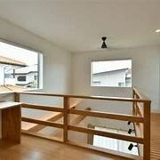
こんにちは。 富山県で自然素材にこだわった家づくりをしている 「フジ創アイノス」と申します。 今回も素材に関して簡単な説明をいたします。 短い文章にまとめます。 ① 珪藻土けいそうど 珪藻→プランクトン。珪藻土とはその化
続きを読む →こんにちは。 富山県で自然素材にこだわった家づくりをしている 「フジ創アイノス」と申します。 今日も更新いたします。 興味がある方はぜひご覧ください。 素材のお話いたします。 簡単な説明になります。 ① 天然リノリウム。
続きを読む →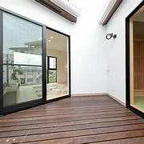
こんにちは。 富山県で自然素材にこだわった家づくりをしている 「フジ創アイノス」と申します。 今日は、10月13日木曜日。 肌寒いです。天候は、時々光がさします。 光がさすことは、気持ちがいいですね。 気分も良くなります
続きを読む →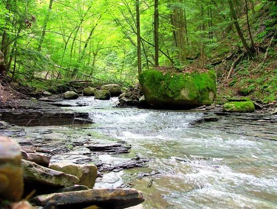
こんにちは。 富山県で自然素材にこだわった家づくりをしている 「フジ創アイノス」です。 今日は10月11日火曜日。 天候は、曇り空に時々雨です。 気温は、肌寒いです。 今日も体調管理に気をつけましょう。 本当に、秋になり
続きを読む →こんにちは 富山県で自然素材にこだわった家づくりをしている。 「フジ創アイノス」です。 みなさん、体調管理できてますか・ 季節の変わり目、気を付けましょう。 この季節こそ。チャンスです・ 「フジ創アイノス」という居心地の
続きを読む →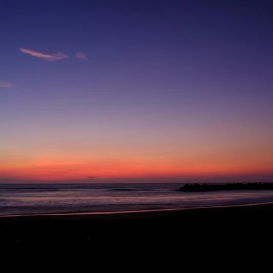
こんにちは 富山県で自然素材にこだわった家づくりをしている 「フジ創アイノス」です。 2022/10/06 木曜日。 今日は気温がとても肌寒い日です。 体調管理も大事だと思います。 今日は長袖日和です。 この時期こそチャ
続きを読む →こんにちは 富山県で自然素材にこだわった家づくりをしている 「フジ創アイノス」です。 いきなりですが、秋と言ったら何が浮かびますか？ 私は色んなこと浮かびます。 食べ物、趣味、色、綺麗な紅葉、綺麗な季節。。 数え切れない
続きを読む →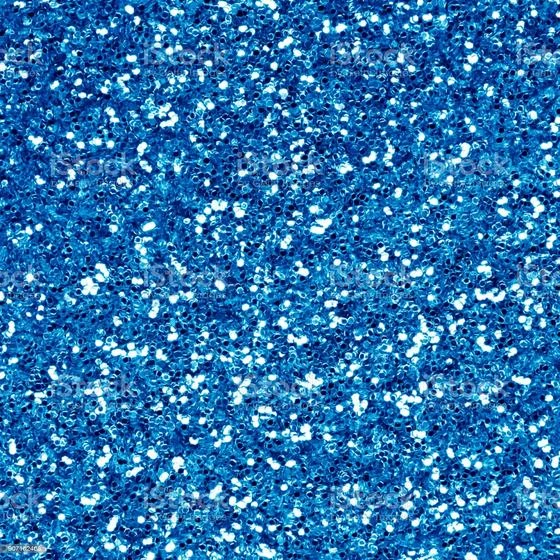
こんにちは 富山県で自然素材にこだわった家づくりをしている 「フジ創アイノス」と言います。 イベントに関して。。 コチラ「フジ創アイノス」では 色んなイベントがあります。 その情報は 「フジ創アイノス」のホームページから
続きを読む →こんにちは。 富山県で自然素材にこだわった家づくりを 「フジ創アイノス」です。 10月と言えば食欲の秋。何でも食べたくなる季節。。 やめられないです。 この季節こそ、友達、家族、親戚、大切な人。 楽しい空間で過ごしたくな
続きを読む →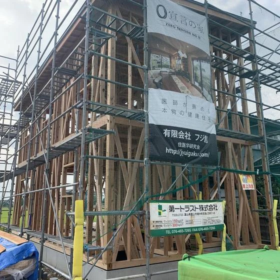
こんにちは。 冨山で自然素材にこだわるホンモノの家造り、『フジ創アイノス』です。 今日8月23日は暦の上で処暑で、厳しい暑さも峠を越して朝夕涼しい風が吹き、 これを境に暑さも和らいでいく日だそうです。 それでも今日はまだ
続きを読む →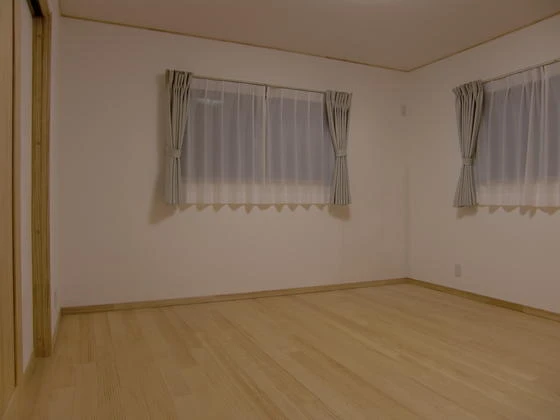
こんにちは、富山県で自然素材にこだわった家づくりをしている「フジ創アイノス」です。 最近フジ創アイノス、ホームページから「漆喰の秘密」の小冊子請求が沢山あります。 秘密と言えば何なのか知りたいですよね 住宅会社の９０％は
続きを読む →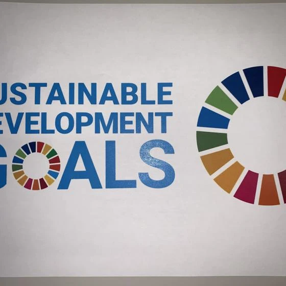
こんにちは。 冨山で自然素材にこだわるホンモノの家造り、『フジ創アイノス』です。 最近よく『SDGS』という言葉を耳にします。 調べますと持続可能な開発目標（環境、差別、貧困、人権等々の問題）を定め、2030年までに 解
続きを読む →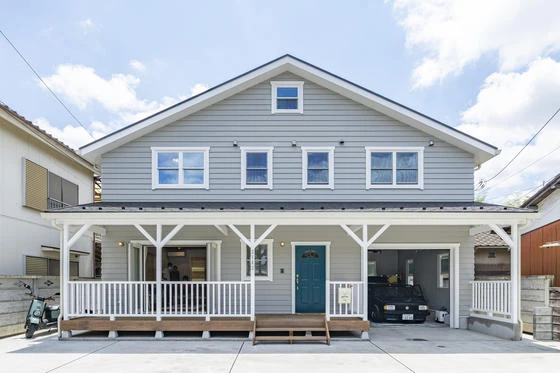
住宅の値段ほど解りにくいものはない！ そろそろ、アパートを脱出しようかと考えてるご夫婦で 一番の悩みは住宅の価格が解りにくいことです。 回ってないすし屋で魚の名前は書いてあるが値段が書いてないので ドキドキしながら食べる
続きを読む →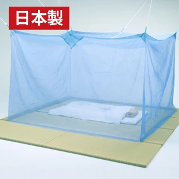
こんにちは、富山で自然素材の注文住宅を造っている、フジ創アイノスです。 蚊のシーズンです。 会社の前で携帯電話かけてたら、蚊に７か所も刺されました。 かゆくて、かゆくて、たまりません。ムヒ、ムヒ、塗ったらあっという間にお
続きを読む →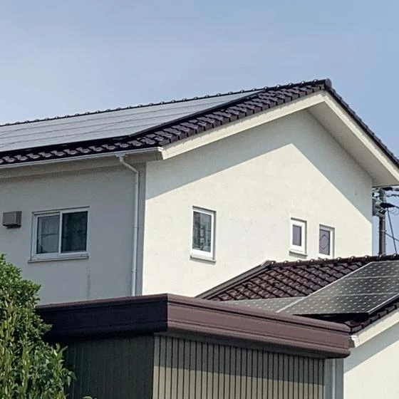
こんにちは。 冨山で自然素材にこだわるホンモノの家造り、『フジ創アイノス』です。 近年地球温暖化による気候変動が叫ばれる中、脱炭素の流れとして 再生可能エネルギーの普及が広まってきました。 住宅においても再生可能エネルギ
続きを読む →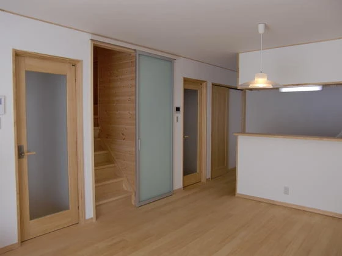
こんにちは、富山で自然素材にこだわって注文住宅を造っている フジ創アイノスです。 前回の記事はビニールクロスには調湿効果が無いことを書きました。 その結果カビが生えて健康被害が起きることをお知らせしました。 今日はビニー
続きを読む →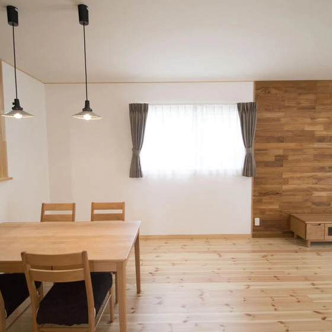
こんにちは。 冨山で自然素材にこだわるホンモノの家造り、『フジ創アイノス』です。 日本全国でコロナウイルスの第7波が爆発的に猛威を振るい、一日当たりの感染者数が 過去最高を記録したり、戻り梅雨に入った空模様で雷雨や激しい
続きを読む →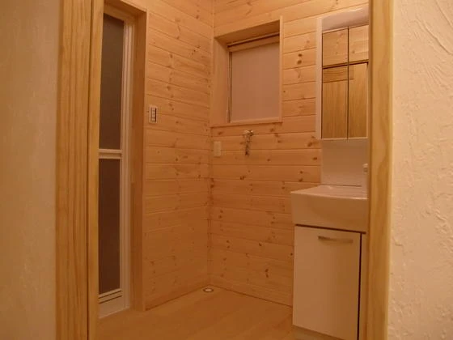
こんにちは、富山で自然素材の注文住宅を造っている、フジ創アイノスです。 現代の住宅はほぼ95%は内装にクロスというものが使われています。 クロスとは訳すと、布のことですよね しかし４０数年前から住宅の内装に使われてきたク
続きを読む →こんにちは。 冨山で自然素材にこだわるホンモノの家造り、『フジ創アイノス』です。 今週も雨の多いすっきりしない空模様の一週間となりそうです。 すっきりした夏空を期待するのは来週以降になりそうです。 住宅業界でも今の空模様
続きを読む →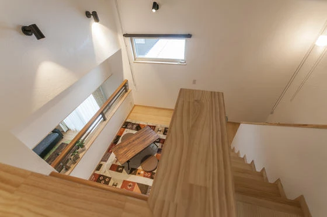
こんにちは、富山で自然素材の注文住宅を造っている、 フジ創アイノスです。 今日はスキップフロアーのある家について 検証しましょう。 ２階建て住宅の場合はツーフロアーになりますが 階段のかけ方を工夫することで３階層、４階層
続きを読む →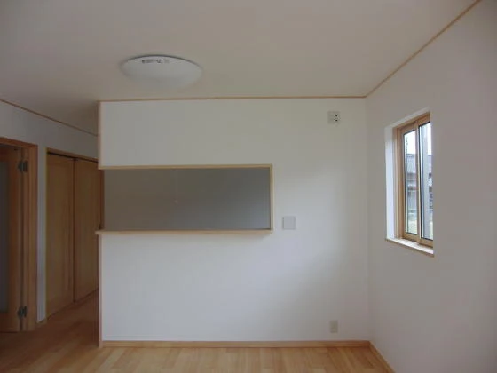
壁天クロス.pdf こんにちは。 冨山で自然素材にこだわるホンモノの家造り、『フジ創アイノス』です。 昨今、住宅メーカーの多くが自然素材を使用した住宅造りを謳っています。 当社もそのうちの一社でこれを安く提供できるよう日
続きを読む →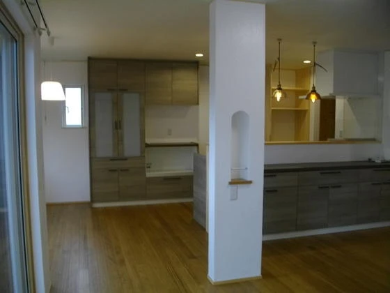
こんにちは 富山で自然素材の本物の注文住宅にこだわる 「フジ創アイノス」です。 注文住宅で一番気になることがキッチンです。 最近はご夫婦でキッチンに立たれるご夫婦が増えていますが 私の様に昭和のベビーブームに生まれたもの
続きを読む →